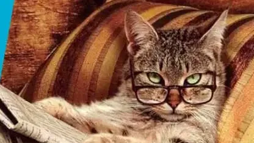

Jak chytré jsou kočky?
Psi nebo kočky? Co říká věda o kočičím mozku, proč se kočky špatně zkoumají a která plemena patří k nejbystřejším.

Zeptejte se majitele kočky, jak je chytrá, a vyslechnete si spoustu historek. Ostatní namítnou, že kočka je nejšťastnější v krabici od bot. Kdo má pravdu?
Co říká věda
Kočičí mozek je stavbou podobný lidskému, má mozkovou kůru se stejnými hlavními laloky. Studie z roku 2017 (Frontiers in Neuroanatomy) spočítala neurony v mozkové kůře: kočka jich má asi 250 milionů, pes asi 530 milionů a člověk kolem 16 miliard.
Počet neuronů ale není všechno. Kočky se zkoumají hůř než psi. Mají výraznou osobnost, nerady spolupracují na povel a v cizím prostředí laboratoře se chovají jinak než doma. Novější výzkumy ukazují, že kočky poznají své jméno i hlas svého člověka a umí si s ním vytvořit pevné pouto.
Bystrá plemena
K plemenům, o kterých se říká, že jsou mimořádně učenlivá a zvídavá, patří například:
- habešská kočka
- balinéská kočka
- bengálská kočka
- cornish rex
- siamská kočka
- sibiřská kočka
- turecká angora a turecká van
To ale neznamená, že obyčejná domácí kočka je méně chytrá. A jeden důkaz kočičí inteligence je nevyvratitelný: dokázaly si nás, lidi, dokonale vychovat.